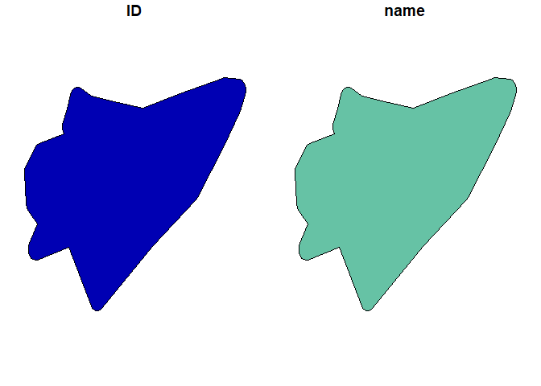

The R Script associated with this page is available here. Download this file and open it (or copy-paste into a new script) with RStudio if you want to follow along.
Wrappers are packages that combine the computational efficiency of external tools with the convenience of R-scripts. So rather than executing for a combination of bash/console commands and tools from Graphical Interfaces, simply call the tools directly in subprocesses within R.
Here we cover a few, but there obviously many other wrappers for open source GIS tools that one can incorporate into their analyses. This is by the way very similar to developing python code for ArcPy. For instance there is RSAGA if you want to load the tools available through SAGA or rgrass7 for GRASS-based tools. Please explore the library functions on your own.
The GDAL library forms the backbone of many open-source software solutions and also provides a number of tools, which are - due to their fast C implementation - often the best solution for processing large datasets or memory intensive tasks. In R the package gdalUtils provides one way of accessing the tools from GDAL.
library(gdalUtils)
# Convert one dataset to another format
gdal_translate(src_dataset = 'ht_004_clipped.tif',
dst_dataset = 'ht_004_clipped.asc',
b = 2 # Only band 2
)## NULLfile.remove('ht_004_clipped.asc') # Remove the file again## [1] TRUE# Query file info using the gdalinfo
gdalinfo('ht_004_clipped.tif')## [1] "Driver: GTiff/GeoTIFF"
## [2] "Files: ht_004_clipped.tif"
## [3] "Size is 937, 557"
## [4] "Coordinate System is:"
## [5] "GEOGCRS[\"WGS 84\","
## [6] " DATUM[\"World Geodetic System 1984\","
## [7] " ELLIPSOID[\"WGS 84\",6378137,298.257223563,"
## [8] " LENGTHUNIT[\"metre\",1]]],"
## [9] " PRIMEM[\"Greenwich\",0,"
## [10] " ANGLEUNIT[\"degree\",0.0174532925199433]],"
## [11] " CS[ellipsoidal,2],"
## [12] " AXIS[\"geodetic latitude (Lat)\",north,"
## [13] " ORDER[1],"
## [14] " ANGLEUNIT[\"degree\",0.0174532925199433]],"
## [15] " AXIS[\"geodetic longitude (Lon)\",east,"
## [16] " ORDER[2],"
## [17] " ANGLEUNIT[\"degree\",0.0174532925199433]],"
## [18] " ID[\"EPSG\",4326]]"
## [19] "Data axis to CRS axis mapping: 2,1"
## [20] "Origin = (7.377105383000000,48.967647157000002)"
## [21] "Pixel Size = (0.009919088191035,-0.009910704242370)"
## [22] "Metadata:"
## [23] " AREA_OR_POINT=Area"
## [24] "Image Structure Metadata:"
## [25] " COMPRESSION=DEFLATE"
## [26] " INTERLEAVE=PIXEL"
## [27] "Corner Coordinates:"
## [28] "Upper Left ( 7.3771054, 48.9676472) ( 7d22'37.58\"E, 48d58' 3.53\"N)"
## [29] "Lower Left ( 7.3771054, 43.4473849) ( 7d22'37.58\"E, 43d26'50.59\"N)"
## [30] "Upper Right ( 16.6712910, 48.9676472) ( 16d40'16.65\"E, 48d58' 3.53\"N)"
## [31] "Lower Right ( 16.6712910, 43.4473849) ( 16d40'16.65\"E, 43d26'50.59\"N)"
## [32] "Center ( 12.0241982, 46.2075160) ( 12d 1'27.11\"E, 46d12'27.06\"N)"
## [33] "Band 1 Block=937x2 Type=UInt16, ColorInterp=Gray"
## [34] " NoData Value=0"
## [35] "Band 2 Block=937x2 Type=UInt16, ColorInterp=Undefined"
## [36] " NoData Value=0"Another very common task is to combine two rasters (overlapping or not) to a new single raster file. This can be done using a VRT file. The code and data below is from the help file, so have a look.
# Load these files provided by the gdalUtils package
layer1 <- system.file("external/tahoe_lidar_bareearth.tif", package="gdalUtils")
layer2 <- system.file("external/tahoe_lidar_highesthit.tif", package="gdalUtils")
# The ouput vrt file
output.vrt <- paste(tempfile(),".vrt",sep="")
# Now build the vrt. Notice that here we specfiy that each input raster
# Here we provide a vector of two files. Note that you can do this for many more
gdalbuildvrt(gdalfile = c(layer1,layer2),
output.vrt = output.vrt,
separate = TRUE, # Save in separate bands. If this set to FALSE both layers will be mosaiced
verbose = TRUE
)## Checking gdal_installation...## GDAL version 3.0.4## GDAL command being used: "C:\OSGeo4W64\bin\gdalbuildvrt.exe" -separate "C:\Users\Martin\AppData\Local\Temp\RtmpqIhFO4\file27f06eba3967.vrt" "C:/Users/Martin/Documents/R/win-library/4.0/gdalUtils/external/tahoe_lidar_bareearth.tif" "C:/Users/Martin/Documents/R/win-library/4.0/gdalUtils/external/tahoe_lidar_highesthit.tif"## NULLSave the vrt from above in netCDF file format.
# Done here using gdal_translate. Any other tool works as well
gdal_translate(src_dataset = output.vrt,
dst_dataset = 'newLidar.nc')The QGIS suite is the most popular and comprehensive open source GIS suite. Its visual and analytical capacities - in my opinion - are already superior than that of many propertiary GIS software (ArcGIS, ENVI,…).
QGIS has also many useful functions for vector and raster processing. Through a new experimental wrapping package these functions have now become available.
library(qgisprocess)## Using 'qgis_process' at 'C://OSGeo4W64/bin/qgis_process-qgis.bat'.
## Run `qgis_configure()` for details.# NOTE: You need the latest QGIS version (3.14) for this to work!
# First set the path to the QGIS installation
qgis_configure()## getOption('qgisprocess.path') was not found.## Sys.getenv('R_QGISPROCESS_PATH') was not found.## Trying 'qgis_process' on PATH## Error in rethrow_call(c_processx_exec, command, c(command, args), stdin, : Command 'qgis_process' not found @win/processx.c:994 (processx_exec)## Found 1 QGIS installation containing 'qgis_process':
## C://OSGeo4W64/bin/qgis_process-qgis.bat## Trying command 'C://OSGeo4W64/bin/qgis_process-qgis.bat'## Success!# This command should print a sucess at the end.
# This now supports a whooping 977 algorithms (possibly even more on your system)
# qgis_algorithms()Lets load the Laxenburg park shapefile and buffer it using qgisprocess as example.
suppressPackageStartupMessages(library(sf))## Warning: replacing previous import 'vctrs::data_frame' by 'tibble::data_frame'
## when loading 'dplyr'laxpol <- st_read('Laxenburg.gpkg')## Reading layer `Laxenburg' from data source `C:\Users\Martin\IIASA\Talks\20201022_ESMtraining\CDAT_Materials\SpatialDataAnalysis_withR\Laxenburg.gpkg' using driver `GPKG'
## Simple feature collection with 1 feature and 2 fields
## geometry type: POLYGON
## dimension: XY
## bbox: xmin: 16.35322 ymin: 48.05182 xmax: 16.38144 ymax: 48.07108
## geographic CRS: WGS 84# Run
result <- qgis_run_algorithm(
"native:buffer",
INPUT = laxpol,
DISTANCE = 0.001, # In degrees since we did not transform the layer
DISSOLVE = TRUE,
.quiet = TRUE
)## Argument `SEGMENTS` is unspecified (using QGIS default value).## Using `END_CAP_STYLE = "Round"`## Using `JOIN_STYLE = "Round"`## Argument `MITER_LIMIT` is unspecified (using QGIS default value).## Using `OUTPUT = qgis_tmp_vector()`# This has created a new QGIS results file
# Now load it into R
output_sf <- sf::read_sf(qgis_output(result, "OUTPUT"))
plot(output_sf)
Make sure that both QGIS and the qgisprocess package are installed on your system. Note that the R-package is still in development and some things might not work as expected.
# The help for any algorithm can be found in QGIS or by looking it up directly
# Get data.frame with all algorithms
la <- qgis_algorithms()
qgis_show_help("native:dissolve")## Dissolve (native:dissolve)
##
## ----------------
## Description
## ----------------
## This algorithm takes a vector layer and combines their features into new features. One or more attributes can be specified to dissolve features belonging to the same class (having the same value for the specified attributes), alternatively all features can be dissolved in a single one.
##
## All output geometries will be converted to multi geometries. In case the input is a polygon layer, common boundaries of adjacent polygons being dissolved will get erased.
##
## ----------------
## Arguments
## ----------------
##
## INPUT: Input layer
## Argument type: source
## Acceptable values:
## - Path to a vector layer
## FIELD: Dissolve field(s)
## Argument type: field
## Acceptable values:
## - The name of an existing field
## - ; delimited list of existing field names
## OUTPUT: Dissolved
## Argument type: sink
## Acceptable values:
## - Path for new vector layer
##
## ----------------
## Outputs
## ----------------
##
## OUTPUT: <outputVector>
## DissolvedBest explore the package functions yourself if you are looking for a function not yet available in standard R packages. Often the python code implemented in QGIS can also be considerably faster.